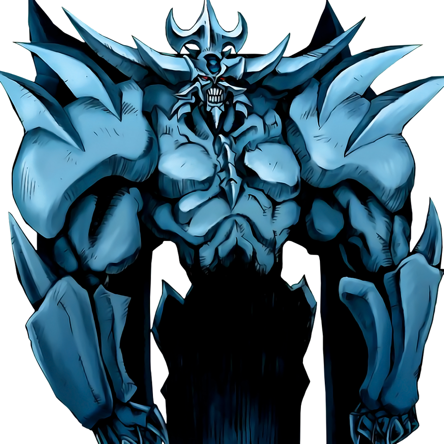
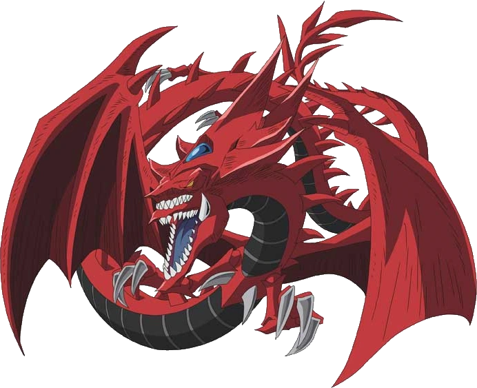

Welcome one and welcome all to the only place where you can relax, or sharpen your dueling skills!
- This resort was created specifically for duelists...
- A new chance to prove yourself and the skills that you have.
- Catch the eye of the best duelist in the region, and possibly the world.
- Learn, or teach, new plays and techniques to get ahead.
- Well-lit areas with ample table space for card layouts and side decks, ensuring a comfortable dueling experience. Battle stations and custom-themed duel rooms for an immersive touch.
- Robust internet connectivity to check card databases or use the official Yu-Gi-Oh! Neuron app to manage Life Points and track matches.
- High-quality, ergonomic chairs for long hours of play.
- Easily accessible and affordable food/snack options, or visit our cafeteria, fully stocked with a vast variety of local food and dishes.
- Special duelist packages and discounted group rates.
- Designate safe, well-lit public areas for players to trade cards with plenty of security guards at all point to ensure safety at all times.
- Great capacity to host in-house tournaments or locals, with potential perks like store credit or booster packs as prizes.
- Each room has its very own safe with customisable codes to ensure the safety of every guest's decks and cards.

Obelisk the Tormentor
The Winged Dragon of Ra
